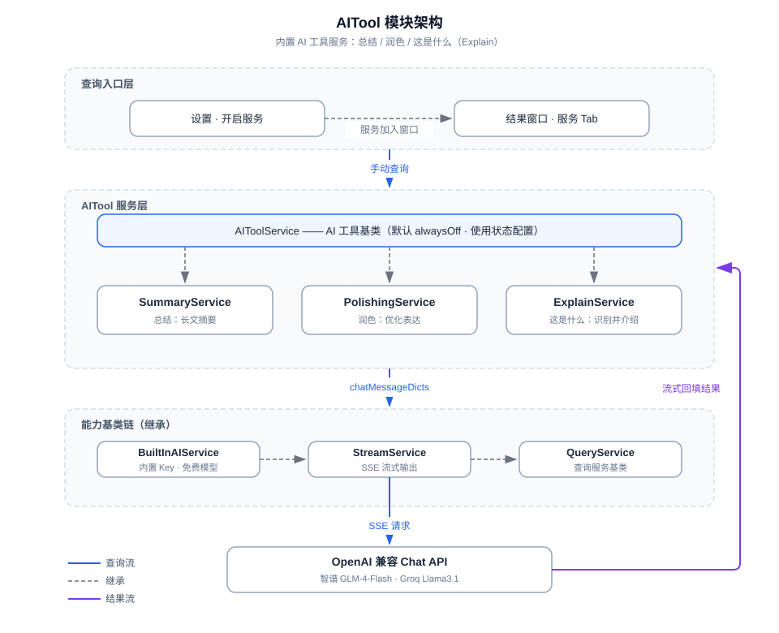

AITool 目录概览
模块职责
AITool 是建立在内置 AI（BuiltInAI）之上的一组「工具型」查询服务，面向
选中文本后的一键文本处理场景，而不是常规的翻译。家族内的每个服务只做两件事：
用 chatMessageDicts(_:) 把用户文本组装成专属 Prompt 消息序列，其余链路
（请求、流式输出、结果回填、设置 UI）全部复用父类能力。服务默认使用状态为
alwaysOff，不会跟随划词自动查询，只在用户点击结果窗口中对应服务 Tab 时手动触发，
避免消耗内置共享免费额度。
文件清单
| 文件 | 职责 |
|---|---|
AIToolService.swift |
家族基类，继承 BuiltInAIService；定制设置页（隐藏 API Key / 端点 / 模型等配置，仅保留使用状态），并把默认使用状态固定为 alwaysOff。 |
SummaryService.swift |
总结服务（服务类型 .summary）：把长文本压缩成保留要点的连贯摘要，回答语言取用户第一语言。 |
PolishingService.swift |
润色服务（.polishing）：改进清晰度、语法与可读性，只返回润色后的文本。同时被「润色替换」全局动作（ActionManager）复用。 |
ExplainService.swift |
「这是什么」服务（.explain）：识别输入指向什么（术语、报错、代码、缩写、物品等）并给出介绍，按输入自适应详略，回答语言取用户第一语言。 |
aitool-overview.html / aitool-architecture.svg |
本目录的中文概览文档与配套架构图。 |
继承与能力来源
SummaryService / PolishingService / ExplainService → AIToolService → BuiltInAIService →
BaseOpenAIService → StreamService → QueryService。经由这条继承链，工具服务开箱即得：
- 免配置密钥：内置 API Key 与端点（
APIKey.builtInAIAPIKey），免费模型 GLM-4-Flash / Llama3.1-8B；模型列表随 App 版本固化，不拉取远端模型。 - 流式输出：
StreamService的 SSE 流式请求与节流结果流，结果逐段回填QueryResult。 - 全语言支持：语言表直接继承内置 AI 的全量语言。
- 设置 UI：
StreamConfigurationView按需裁剪，工具服务仅展示「使用状态」选择器。
查询流程

- 设置 → 服务列表开启工具服务（
QueryServiceFactory注册后自动出现在各窗口服务列表）。 - 划词 / 输入触发查询时，因使用状态为
alwaysOff，服务不会自动执行；用户点击结果窗口中的服务 Tab 手动查询。 chatMessageDicts(_:)组装 system prompt + 双语 few-shot +"""用户文本"""的消息序列。- 基类把消息转换为 OpenAI 兼容请求，经内置端点调用免费模型，流式回填结果。
边界与约束
- 工具服务不承担翻译语义：查询类型虽走
.translation通道，但 Prompt 完全由各子类自定义。 - 回答语言固定为
MyConfiguration.shared.firstLanguage，与用户第一语言设置联动。 - 不支持用户自选模型与远端模型拉取（
canFetchRemoteModels = false），模型集合随 App 升级更新。 - 每个服务的 Prompt 都是「system 定角色 + few-shot 定格式 + 用户文本定内容」三段式，few-shot 覆盖中英两种语言方向以稳定输出风格。
失败与调试入口
- 设置页开启服务时会执行
validate()（翻译探针请求），可验证内置 Key 与网络连通性。 - 请求错误经
QueryError归一后在结果卡片展示，流式中断由StreamService统一收尾。 - 集成测试
EasydictTests/Service/ServiceTests.swift会遍历QueryServiceFactory全部注册服务（含本家族），走真实网络验证。 - 离线单测
EasydictTests/Service/ExplainServiceTests.swift覆盖 Explain 服务的注册与 Prompt 组装。
相关阅读：Easydict/Swift/Service/Model/QueryServiceFactory.swift（服务注册表）、
Easydict/Swift/Service/BuiltInAI/BuiltInAIService.swift（内置 AI 服务）、
Easydict/Swift/Service/OpenAI/StreamService+Prompt.swift（翻译类 Prompt，供对比）。